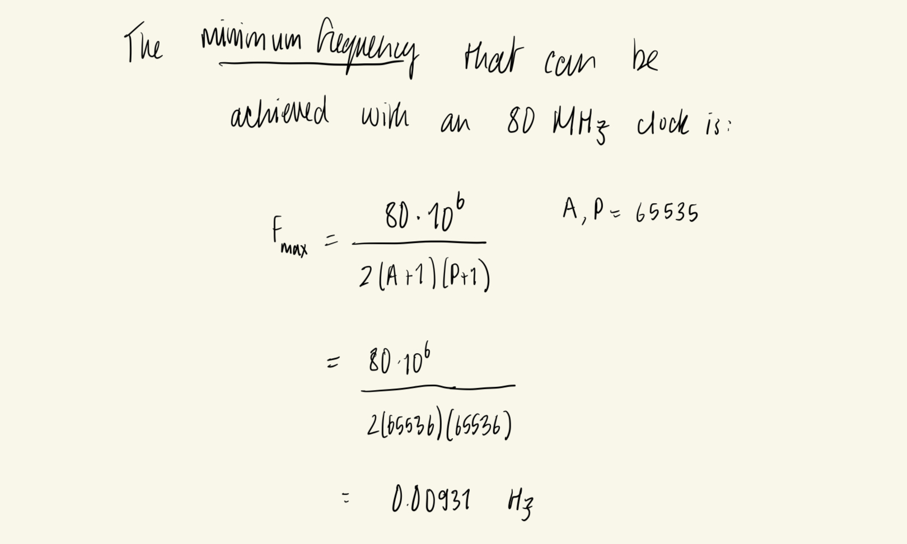
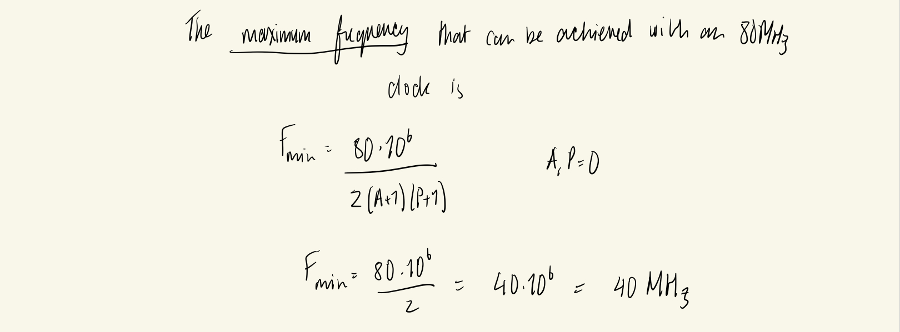
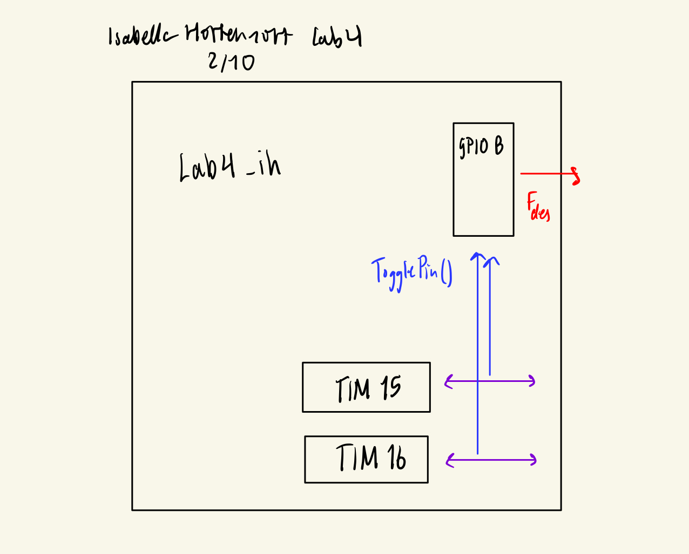

Lab 4: Digital Audio
Introduction
In this lab, two General Purpose Timers on the STM32L432KC Board were used to generate a square wave at a desired frequency and play Beethoven’s “Für Elise” over a GPIO pin. This undertaking reqired understanding of many of the different components available on the STM32L432KC Board. To gain this understanding, the datasheet was parsed through. A circuit for low voltage audio amplification was also assembled to produce an audible output from a Jameco 8 Ohm Speaker and provide volume control.
Design and Testing Methodology
For this design, the PLL was used to step the internal clock up to a frequency of 80 MHz. This was then configured as the system clock source. The APB2 and AHB2 buses were configured to receive the 80 MHz clock, as well, allowing the internal Timers and GPIO pins access to the signal. The two General Purpose Timers: TIM15 and TIM16 were used in this design. The timers were configured following the relationship between the prescaler and auto-reload register:
\[ Fdesired = \frac{Ftim}{(2*(PSC + 1)*(ARR + 1))} \]
and
\[ Durdesired = \frac{(4*(PSC + 1)*(ARR + 1))}{Ftim} \]
A C for-loop iterated through a list of pitch-duration combinations that produced the score for “Für Elise”. While TIM16- representing the duration- counted, TIM15- representing the frequency- toggled a GPIO pin for each note. These actions were accomplished based on the Update Interrupt Flag of the Status Register of each Timer.
The following desmos sheet was used to verify the frequencies of the Timer 15 are correct. The ARR and PSC registers were recorded from Segger and tested as variables in the desmos to do so.
The following desmos sheet was used to verify the durations of the Timer 16 are correct. The ARR and PSC registers were recorded from Segger and tested as variables in the desmos to do so.
Two C functions: set_hz() and config_delay() were written to execute these configurations. These functions are run within the for-loop in main.c.
The GPIO bank B was initialized to toggle pin 6.
Technical Documentation
The “ACR” register was configured for FLASH configuration.
The following RCC registers configured to set the PLL and system clock:
CR
PLLCFGR
CFGR
APB2ENR
AHB2ENRThe following GPIO registers configured to initializie GPIO Bank B and toggle pin 6:
MODER
ODCThe following TIM15 registers were configured to set Timer 15 as the frequency timer:
PSC
EGR
CR1
ARR
SR
CNTThe following TIM16 registers were configured to set Timer 16 as the delay timer:
PSC
EGR
CR1
ARR
SR
CNTThe below calculations were used to determine an appropriate prescaler and auto-reload-register value:
For the duration timer, a prescaler value of 1000 was selected. As a result, the TIM16_PSC register was loaded with the value of 999. Calculations for the ARR can be found in the following desmos sheet. The ARR values were calculated in real-time in the config_delay() function.
For the frequency timer, a prescaler value of 20 was selected. As a result, the TIM15_PSC register was loaded with the value of 19. Calculations for the ARR can be found in the following desmos sheet. The ARR values were calculated in real-time in the set_hz() function.
These values are proven to fall within 1% of the desired frequencies. The ARR values of the register were recorded over the Segger Registers window. These were used to derive the resulting frequency of the output signal. Calculations can be found using the following desmos. All unique notes were tested.
The minimum and maximum frequency supported by the selected prescaler and ARR can be found below:


Using these findings, the minimum and maximum duration supported by the selected prescaler and ARR can easily be found below:
I produced my own composition, following Bedrich Smetana’s “Vltava”. I referenced simple sheet music to produce the following fixed 2D array of frequencies and durations.
Schematic
The circuitry for the audio amplifier follows the suggested implementation from the LM386 datasheet. The following schematic was implemented in hardware.

Block Diagram
The following abstracted block diagram of the system can be used to understand the design:

Results and Discussion
This design was successfully able to play the desired pitches and durations of notes, piecing together Beethoven’s “Für Elise”. The associated circuitry was compact and easy to assemble. This design could have been undertaken in a different way, by producing a PWM signal at the Timer output. The timers could have also been configured to speak directly with the GPIO pins. I had initially attempted this path when going through the datasheet, but eventually had the idea of the current implementation. This implementation is faster and do not present timing issues at the frequencies being handled, so I decided to pursue this design instead.
Conclusion
Overall, this project was an opportunity to familiarize myself with the different functionalities of the STM32L432KC board, and how to navigate the Reference Manual and Datasheet. It was fun to compose a piece of my choice, as well. I spent 15 hours on this lab.
AI Prototype Summary
I prompted the following LLM with the question:
What timers should I use on the STM32L432KC to generate frequencies ranging from 220Hz to 1kHz? What’s the best choice of timer if I want to easily connect it to a GPIO pin? What formulae are relevant, and what registers need to be set to configure them properly?
It responded:
"TIM2 (32-bit general-purpose) — easiest and most flexible choice. It has multiple channel outputs you can route to GPIO pins (e.g., PA0/PA5/PA15 → TIM2_CH1 (AF1), PB3 → TIM2_CH2 (AF1), etc.). 
• TIM1 / TIM15–17 (16-bit) — also fine for PWM; TIM1 is “advanced” (needs MOE bit set) but you don’t need advanced features for simple tones. Device includes 1× advanced, 2× GP16, 1× GP32 per datasheet. 
• LPTIM1 / LPTIM2 (low-power timers) — great if you want the signal to keep running in Stop modes or be clocked from LSE/LSI, and they have an OUT pin you can map (e.g., PA4/PA8 → LPTIM2_OUT (AF14)). For simple “always-on” PWM they work well too. 
Best simple choice for GPIO: TIM2 — 32-bit (so huge range/resolution), plentiful pin options (AF1 on several pins), and zero “advanced timer” gotchas. "Overall, the datasheet got the explicitly-mentioned functionalities of the onboard timer right. For the specific application, it was wrong in deciding that 32 bits would be necessary. It did not include configurations to the RCC that need to be made for the Timers. It also forgot to add anything about registers or calculations for the actual clock division. The LLM also pointed toward the low-power timers. This is not unreasonable, because it wasn’t given any information on how long the timers would be active vs idle. After providing the LLM with the Reference Manual, it reaffirmed the decision to use Timer 2. Overall, I think going through the reference manual on my own is still a better use of time than taking the LLM output and debugging. I was a bit surprised about this, because I feel that there is enough online documentation for the LLM to output a more detailed response.